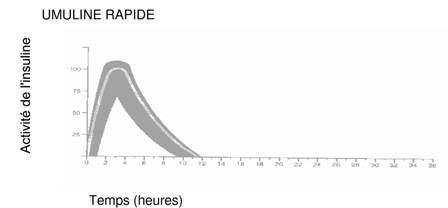

RÉSUMÉ DES CARACTÉRISTIQUES DU PRODUIT
ANSM - Mis à jour le : 08/03/2013
UMULINE RAPIDE 100 UI/ml, solution injectable en cartouche
2. COMPOSITION QUALITATIVE ET QUANTITATIVE
1 ml contient: 100 UI d'insuline humaine (produite dans Escherichia coli par la technique de l'ADN recombinant).
Une cartouche contient 3 ml correspondant à 300 UI d'insuline soluble.
Pour la liste complète des excipients, voir rubrique 6.1.
Solution injectable en cartouche.
UMULINE RAPIDE est une solution aqueuse stérile, limpide et incolore d'insuline humaine.
4.1. Indications thérapeutiques
Traitement des patients atteints de diabète nécessitant un traitement par insuline pour maintenir un équilibre glycémique normal.
4.2. Posologie et mode d'administration
La posologie est déterminée par le médecin, selon les besoins du patient.
UMULINE RAPIDE doit être administré par injection sous-cutanée mais peut également, bien que ce ne soit pas conseillé, être administré par injection intramusculaire. UMULINE RAPIDE peut également être administré par voie intraveineuse.
L'administration sous-cutanée doit être effectuée dans les bras, les cuisses, les fesses ou l'abdomen. Les points d'injection doivent varier afin de ne pas utiliser le même point d'injection plus d'une fois par mois environ.
Lors de l'injection de toute préparation d'insuline UMULINE, s'assurer que l'aiguille n'a pas pénétré dans un vaisseau sanguin. Après l'injection, ne pas masser le point d'injection. Les patients doivent être éduqués pour utiliser une technique d'injection correcte.
Chaque boîte contient une notice d'information contenant des instructions pour pratiquer l'injection d'insuline.
Hypoglycémie.
Hypersensibilité à UMULINE ou à l'un de ses composants, sauf dans le cadre d'un programme de désensibilisation.
Les préparations d'UMULINE ne doivent en aucun cas être administrées par voie intraveineuse, à l'exception d'UMULINE RAPIDE (insuline soluble).
4.4. Mises en garde spéciales et précautions d'emploi
Les patients recevant de l’insuline humaine peuvent nécessiter un changement de posologie par rapport à leurs insulines d’origine animale. Si une adaptation posologique est nécessaire, elle peut être faite lors de la première administration ou au cours des premières semaines ou des premiers mois.
Quelques patients ayant présenté des réactions hypoglycémiques après transfert d’une insuline d’origine animale à une insuline humaine ont signalé que les symptômes précurseurs d’hypoglycémie étaient moins prononcés ou différents de ceux ressentis lors de leur traitement antérieur par l'insuline animale. Les patients dont la glycémie s’est améliorée de façon importante, par exemple grâce à l’insulinothérapie intensifiée, peuvent voir disparaître certains ou tous les symptômes précurseurs d’hypoglycémie et doivent donc en être informés. La modification ou la diminution des symptômes précurseurs d’hypoglycémie peut également survenir chez les patients présentant un diabète de longue durée, une neuropathie diabétique ou prenant simultanément d'autres médicaments tels que les bêta-bloquants. L'hypoglycémie non corrigée ou les réactions d'hyperglycémie peuvent entraîner une perte de connaissance, un coma ou le décès.
L’utilisation de posologies mal adaptées ou l’arrêt du traitement, en particulier chez les diabétiques insulino-dépendants, peuvent entraîner une hyperglycémie et une acido-cétose diabétique dont le pronostic peut être fatal.
Le traitement par insuline humaine peut provoquer la formation d’anticorps, mais leurs taux sont inférieurs à ceux observés avec l'insuline animale purifiée.
Les besoins en insuline peuvent changer de façon significative en cas de maladies surrénalienne, hypophysaire ou thyroïdienne et d’insuffisance rénale ou hépatique.
Les besoins en insuline peuvent augmenter au cours d’une maladie ou de perturbations affectives.
L’adaptation posologique peut être nécessaire si le patient modifie l’intensité de son activité physique ou modifie son régime alimentaire habituel.
Association d’insuline humaine avec la pioglitazone
Des cas d’insuffisance cardiaque ont été observés lorsque l’insuline était associée à la pioglitazone, en particulier chez des patients ayant des facteurs de risque de développement d’insuffisance cardiaque. Cela devra être pris en compte dans le cas où un traitement associant la pioglitazone et l’insuline humaine est envisagé. Dans ce cas, l’apparition de signes et symptômes d’insuffisance cardiaque, d’une prise de poids et d’œdèmes devra être surveillée chez ces patients. La pioglitazone doit être arrêtée en cas d'aggravation des symptômes cardiaques.
4.5. Interactions avec d'autres médicaments et autres formes d'interactions
Les besoins en insuline peuvent être augmentés par les substances à effet hyperglycémiant, telles que les glucocorticoïdes, les hormones thyroïdiennes, l’hormone de croissance, le danazol, les bêta-2 mimétiques (tels que ritodrine, salbutamol, terbutaline), les thiazidiques.
Les besoins en insuline peuvent être diminués en présence de substances à effet hypoglycémiant, telles que les hypoglycémiants oraux (ADO), les salicylés (par exemple l’acide acétylsalicylique), certains antidépresseurs (les inhibiteurs de la monoamine oxydase IMAO), certains inhibiteurs de l’enzyme de conversion de l’angiotensine (IEC) (captopril, énalapril), les antagonistes des récepteurs de l’angiotensine II, les agents bêta-bloquants non sélectifs et l'alcool.
Les analogues des somatostatines (octréotide, lanréotide) peuvent réduire ou accroître les besoins en insuline.
Il est essentiel de maintenir un bon équilibre glycémique chez la patiente traitée par l'insuline (diabète insulino-dépendant ou gestationnel) durant la grossesse. Les besoins en insuline chutent habituellement au cours du premier trimestre et augmentent au cours des deuxième et troisième trimestres.
Les patientes diabétiques doivent informer leur médecin si elles sont enceintes ou si elles envisagent une grossesse.
Une surveillance attentive de la glycémie ainsi que de l'état de santé général est primordiale pendant la grossesse chez les patientes diabétiques.
Les patientes diabétiques allaitant peuvent nécessiter une adaptation de la dose d'insuline, de leur régime alimentaire ou des deux.
4.7. Effets sur l'aptitude à conduire des véhicules et à utiliser des machines
Les capacités de concentration et les réflexes peuvent être diminués en cas d'hypoglycémie. Ceci représente un risque pour le patient dans des situations où ces facultés sont de première importance comme la conduite automobile ou l'utilisation de machines.
Les patients doivent être informés des précautions à prendre avant de conduire pour éviter une hypoglycémie, en particulier chez ceux chez qui les symptômes précurseurs d'hypoglycémie sont absents ou diminués ou chez ceux qui ont de fréquents épisodes d'hypoglycémie. La capacité à conduire un véhicule doit être réévaluée dans ces circonstances.
L’hypoglycémie pouvant résulter à la fois d’un excès d’insuline et d’autres facteurs tels que l’apport alimentaire et la dépense énergétique, aucune fréquence de survenue des hypoglycémies ne peut être présentée.
L’allergie locale est fréquente (1/100 à < 1/10). Une rougeur, un œdème et des démangeaisons peuvent survenir au point d’injection. Cette réaction disparaît habituellement en quelques jours voire quelques semaines. Dans certains cas, ces réactions locales peuvent être liées à des facteurs autres que l’insuline, tels que des produits irritants contenus dans le désinfectant cutané ou une mauvaise technique d’injection.
L’allergie systémique qui est très rare (< 1/10 000) mais potentiellement plus grave, correspond à une allergie généralisée à l’insuline. Elle peut entraîner une éruption généralisée sur tout le corps, une dyspnée, une respiration sifflante, une baisse de la pression artérielle, une accélération du pouls ou des sueurs. Les cas sévères d’allergie généralisée peuvent menacer le pronostic vital.
Dans les rares cas d’allergie sévère à UMULINE, un traitement doit être instauré immédiatement. Un changement d’insuline ou une désensibilisation peut être nécessaire.
Une lipodystrophie au site d'injection apparaît peu fréquemment (1/1 000 à < 1/100).
Des cas d’œdèmes ont été rapportés lors du traitement par insuline, en particulier si un mauvais contrôle métabolique précédent est amélioré par une insulinothérapie intensifiée.
Il n'existe aucune définition spécifique du surdosage insulinique. En effet, la glycémie résulte d'interactions complexes entre les concentrations d'insuline, la disponibilité du glucose et d'autres facteurs métaboliques.
L'hypoglycémie peut résulter d'un excès d'insuline par rapport à l'apport alimentaire et à la dépense énergétique.
L'hypoglycémie peut être associée à une apathie, une confusion, des palpitations, des céphalées, des sueurs et des vomissements.
Les épisodes d'hypoglycémie légère seront compensés par l'administration orale de glucose ou d'autres produits sucrés.
Une hypoglycémie modérément sévère peut être corrigée par l'administration intramusculaire ou sous-cutanée de glucagon, suivie d'une prise orale d'hydrates de carbone lorsque le patient sera suffisamment rétabli. Les patients qui ne répondent pas au glucagon doivent recevoir une solution de sérum glucosé par voie intraveineuse.
En cas de coma hypoglycémique, le glucagon devra être administré par voie intramusculaire ou sous-cutanée. Cependant, s'il n'y a pas de glucagon disponible ou si le patient n'y répond pas, on injectera du sérum glucosé par voie intraveineuse. Dès que le patient aura repris connaissance, un repas lui sera donné.
La prise prolongée d'hydrates de carbone et une surveillance peuvent être nécessaires car une hypoglycémie peut survenir après un rétablissement clinique apparent.
5. PROPRIETES PHARMACOLOGIQUES
5.1. Propriétés pharmacodynamiques
Classe pharmacothérapeutique:UMULINE RAPIDE, code ATC:A10AB01.
Umuline Rapide est une préparation d'insuline d'action rapide.
L'activité principale de l'insuline est la régulation du métabolisme glucidique.
D'autre part, l'insuline possède plusieurs actions anaboliques et anticataboliques dans différents tissus. Dans le muscle, ces effets comprennent une augmentation de la synthèse du glycogène, des acides gras, du glycérol, des protéines et une augmentation de la fixation des acides aminés, ainsi qu'une diminution de la glycogénolyse, de la néoglucogénèse, de la cétogénèse, de la lipolyse, du catabolisme protéique et de l'élimination des acides aminés.
Le profil d'activité-type (courbe d'utilisation du glucose) après injection sous-cutanée est représenté sur la courbe ci-dessous par la ligne épaisse. Les variations en durée et/ou intensité d'activité de l'insuline chez les patients sont représentées par la zone sombre. La variabilité individuelle dépend de facteurs tels que la dose, le site d'injection, la température et l'activité physique du patient.

5.2. Propriétés pharmacocinétiques
La pharmacocinétique de l'insuline ne constitue pas un reflet de l'action métabolique de cette hormone. Il est donc plus approprié d'examiner les courbes correspondant à l'utilisation du glucose (cf. ci-dessus) afin de déterminer l'activité de l'insuline.
5.3. Données de sécurité préclinique
UMULINE est une insuline humaine obtenue par la technologie d'ADN recombinant. Aucun effet secondaire grave n'a été observé lors des études de toxicité subchronique et aucun effet mutagène n'a été mis en évidence dans une série de tests de genotoxicité réalisés in vitro et in vivo.
Glycérol,
Eau pour préparations injectables.
Peuvent être utilisés pour ajuster le pH: Acide chlorhydrique et/ou hydroxyde de sodium
Les préparations d'UMULINE ne doivent pas être mélangées avec les insulines produites par d'autres fabricants ou avec des préparations d'insuline d'origine animale.
Cartouche non utilisée : 2 ans.
Après insertion de la cartouche : 28 jours.
6.4. Précautions particulières de conservation
A conserver au réfrigérateur (entre +2°C et +8°C).
Ne pas congeler. Ne pas exposer à une chaleur excessive ou au soleil.
Après insertion de la cartouche
A conserver à une température ne dépassant pas 30°C. Ne pas réfrigérer. Le stylo avec la cartouche insérée ne doit pas être conservé avec l’aiguille vissée dessus.
6.5. Nature et contenu de l'emballage extérieur
Boîte de 5.
6.6. Précautions particulières d’élimination et de manipulation
Instructions pour l'utilisation et la manipulation
Solution injectable en cartouche de 3 ml à utiliser avec un stylo injecteur compatible, avec marquage CE, ainsi que recommandé dans la documentation fournie par le fabricant du stylo injecteur.
a) Préparation d'une dose
Les cartouches contenant UMULINE RAPIDE ne nécessitent pas de remise en suspension et ne doivent être utilisées que si la solution est limpide, incolore, sans particules visibles et si elle a l'aspect de l'eau.
Les cartouches ne sont pas conçues pour la réalisation d'un mélange avec d'autres insulines. Les cartouches vides ne peuvent être réutilisées.
Les instructions particulières du fabricant pour chaque stylo injecteur doivent être suivies pour charger la cartouche, fixer l'aiguille et pratiquer l'injection d'insuline.
b) Injection d'une dose
Injecter la dose correcte d'insuline en suivant les instructions de votre médecin ou de votre infirmier.
Les points d'injection doivent varier afin de ne pas utiliser le même point d'injection plus d'une fois par mois environ.
Chaque boîte contient une notice d'information contenant des instructions pour pratiquer l'injection d'insuline.
7. TITULAIRE DE L’AUTORISATION DE MISE SUR LE MARCHE
LILLY FRANCE
CS 50004
24, BOULEVARD VITAL BOUHOT
92521 NEUILLY-SUR-SEINE CEDEX
8. NUMERO(S) D’AUTORISATION DE MISE SUR LE MARCHE
· 340 385-6 ou 34009 340 385 6 3: 3 ml de solution injectable en cartouche (verre de type I). Boîte de 5.
9. DATE DE PREMIERE AUTORISATION/DE RENOUVELLEMENT DE L’AUTORISATION
[à compléter par le titulaire]
10. DATE DE MISE A JOUR DU TEXTE
[à compléter par le titulaire]
Sans objet.
12. INSTRUCTIONS POUR LA PREPARATION DES RADIOPHARMACEUTIQUES
Sans objet.
Liste II.